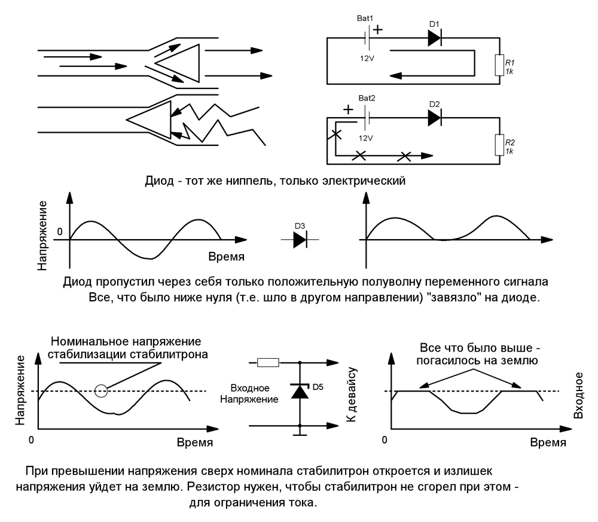

Выводы диода называют анодом и катодом. Ток течет от анода к катоду. Запомнить где какой вывод очень просто: на условном обозначнеии стрелочка и палочка со стороны катода как бы рисуют букву К вот, смотри:
–К|–
К= Катод! А на детали катод обозначается полоской или точкой.
